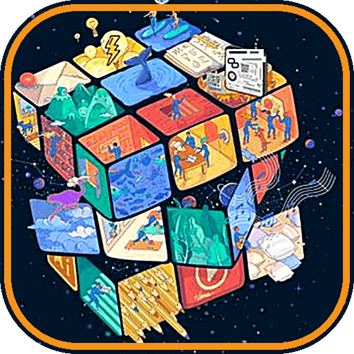

Learner template
Start your learning journey
Your portfolio lives in Git, in a repository you own. Set it up once and everything you commit (projects, reflections, Explorers Days, SIPs) shows up on your Consensus21 profile.

STEP 01
Make your profile repository
On GitHub, create a new public repository with exactly the same name as your username. GitHub treats it as special: its README becomes the front page of your profile.
gh repo create YOUR-USERNAME --public --clone cd YOUR-USERNAME
STEP 02
Copy in the template
This pulls the starter files from the Consensus21 site into your repo. Prefer clicking? Download them from the template folder instead.
npx degit consensus21school/consensus21school.github.io/template . --force git add . && git commit -m "Join Consensus21" && git push
STEP 03
Fill in c21.json
Your name, stage, mentors and a sentence about you. Then open your profile:
https://consensus21.school/profile.html?u=YOUR-USERNAME
STEP 04
Plan your week
Import the default week into your own calendar app. That's the first job in the Time Management program. As your week changes, put your version in the week block of c21.json.
WHAT'S IN THE TEMPLATE
Your repository
YOUR-USERNAME/
├── README.md · your GitHub profile front page
├── c21.json · feeds your Consensus21 profile
├── projects/ · a note on each thing you're building (the code lives in its own repos)
├── reflections/ · one file a week, written on Fridays · TEMPLATE.md
├── explorers/ · one file per Explorers Day Out · TEMPLATE.md
└── sips/ · School Improvement Proposals you write · SIP-TEMPLATE.md
├── README.md · your GitHub profile front page
├── c21.json · feeds your Consensus21 profile
├── projects/ · a note on each thing you're building (the code lives in its own repos)
├── reflections/ · one file a week, written on Fridays · TEMPLATE.md
├── explorers/ · one file per Explorers Day Out · TEMPLATE.md
└── sips/ · School Improvement Proposals you write · SIP-TEMPLATE.md
REFERENCE
c21.json fields
| Field | What it does |
|---|---|
name, headline, about | Shown at the top of your profile. |
stage | Where you're up to, for example Explorer, Builder, Mentor. |
mentors | GitHub usernames of your mentors. Each links to their profile. |
pinned | Repository names to show first. Leave empty to show your most-starred. |
programs | Progress (0–100) in each core program. Agree the numbers with your mentor. |
explorers, reflections | A list of { date, title, path, note }. path points at the markdown file in your repo. |
sips | A list of { id, title, status, note, path }. Status: draft, discussion, voting, accepted, rejected or withdrawn. |
week | null for the default week, or your own: { "days": [...], "start": 8, "end": 17, "blocks": [{ "day": 0, "start": 9, "end": 15, "title": "Explorers Day Out", "type": "explore", "note": "optional" }] }. Types: fit, explore, core, ai, sip, pbl, community, unschool. |